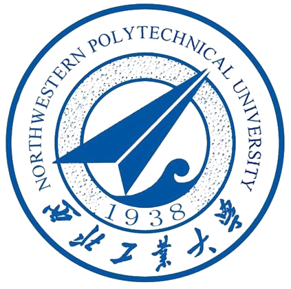
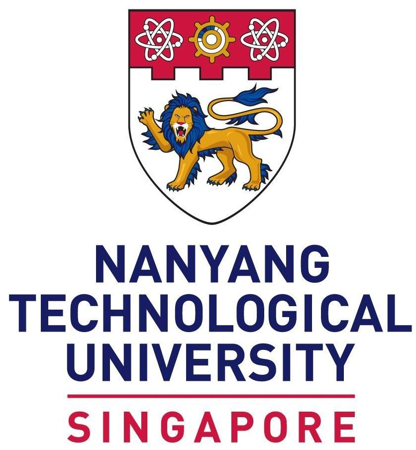
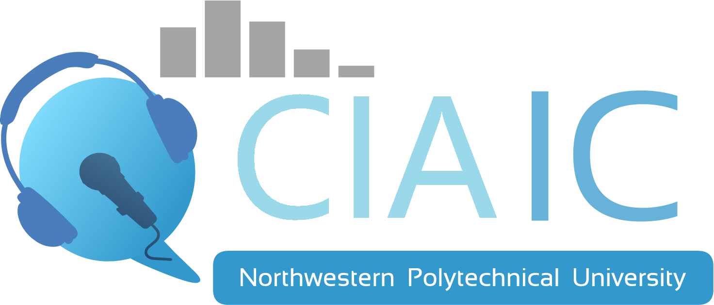
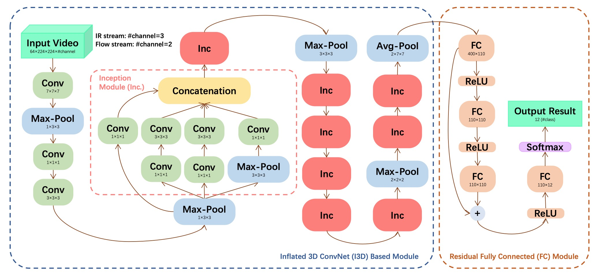
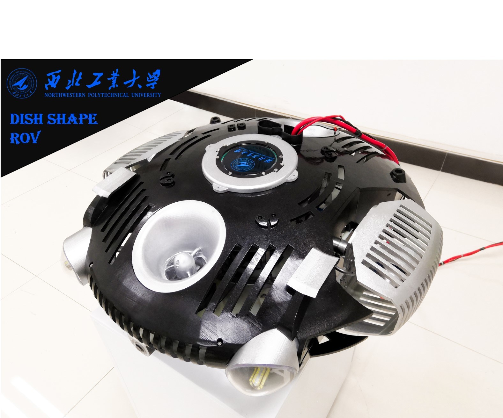
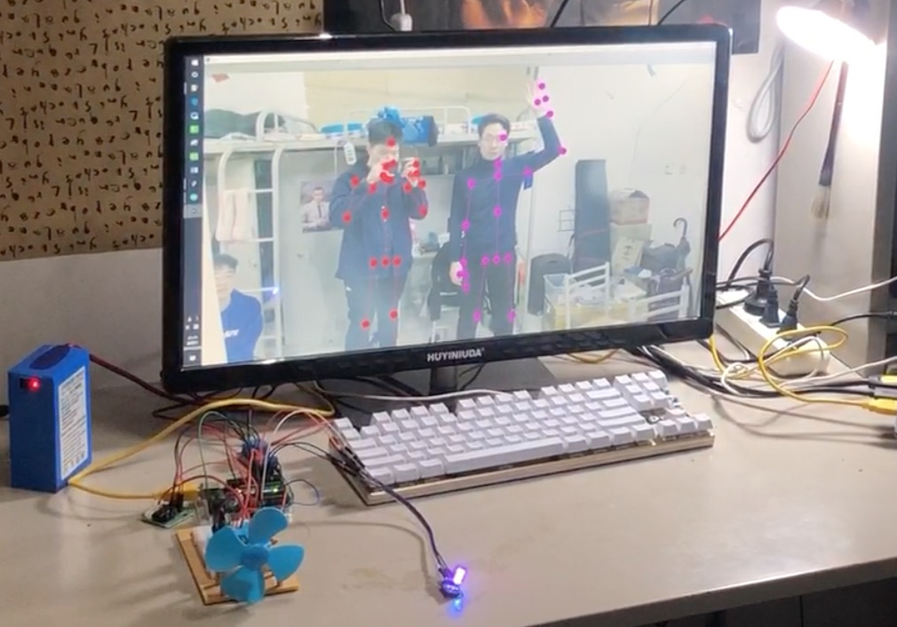
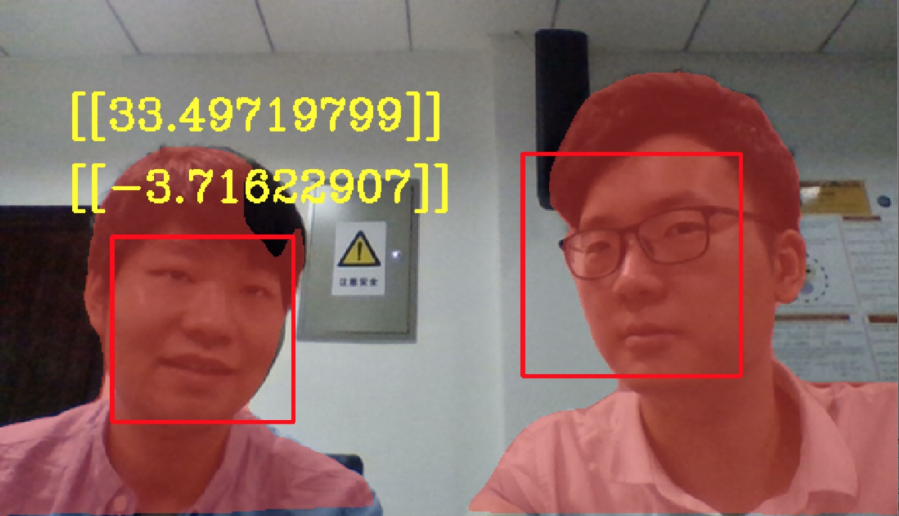

|
News
[2021/10] 1 paper is accepted by IEEE ICICSP 2021.
|
|

|
Northwestern Polytechnical University, Xi'an, China
B.ENG. in Information Engineering Outstanding Graduate • Sep. 2016 - Jun. 2020
GPA: 87.94/100 Ranking: Top 10%
Supervisor: Prof. Jie Chen
|
|

|
Nanyang Technological University, Singapore
M.S. in Signal Processing, School of Electrical and Electronic Engineering • Aug. 2021 - Present
GPA: 4.5/5.0
Courses: EE7207 - Neural & Fuzzy Systems (A+, 5.0) EE6427 - Video Signal Processing (A+, 5.0)
EE6222 - Machine Vision (4.5) EE6101 - Digital Communication Systems (3.5)
Supervisor: Prof. Yap-Peng Tan
|
|
|
Navigation Technology Engineering Center Laboratory, Tsinghua University
Summer Intern • Jul. 2019 - Aug. 2019
Advisor: Prof. Qi Wei
Researched, summarized and compared design principles, manufacturing methods, and technical indicators.
Proposed personal feelings and opinions on industry development.
Put forward the scheme of improving angle sensor to displacement sensor and proposed points for attention.
|
|

|
Center of Intelligent Acoustics and Immersive Communications, NWPU
Research Assistant • Aug. 2020 - Jul. 2021
Advisor: Prof. Jie Chen
Proposed a new method to recognize different actions in Infrared videos.
Collected two well-designed Visible & Infrared image datasets for different tasks.
Completed 1 work and accepted by IEEE ICICSP 2021.
|
|
|
Rapid-Rich Object Search Lab, NTU
M.S. Dissertation Project • Sep. 2021 - Present
Advisors: Prof. Yap-Peng Tan
and Dr. Shan Lin
Researched on Visible & Infrared Person Re-Identification.
Collected new data, proposed new baseline and benchmarks and designed new network architecture.
|
|

|
A Novel 3D Convolutional Neural Network for Action Recognition in Infrared Videos
Jiahao Nie, Longbin Yan, Xiuheng Wang, Jie Chen
IEEE International Conference on Information Communication and Signal Processing, ICICSP 2021
[Paper]
Area: Action Recognition, Infrared Video
We propose a novel 3D ConvNet with a deep architecture to realize action recognition in IR videos.
Besides, a residual fully connected module is introduced after the ConvNet backbone to improve the performance.
Furthermore, we employe a transfer learning strategy, i.e., the proposed method is pretrained on a large-scale visible spectrum dataset
and then finetuned with false-color version of IR images to generalize well in the action recognition task.
|
|

|
ROV Ⅰ & II, Chinese National College Student Innovative Entrepreneurship Project, NWPU
Team Leader • May. 2018 - Aug. 2019
Utilized propeller, steering gear and solenoid valve for a water spraying and vector propulsion method.
Used STM32 SCM and ZigBee to realize wireless control of ROV movement.
Configured camera and multiple sensors for additional functionality.
|
|

|
Kinect and Sensor based Smart Home System,
Chinese National College Student Innovative Entrepreneurship Project, NWPU
Team Leader • May. 2018 - Apr. 2019
Applied Kinect sensor to monitor human movements and conducted different functions.
Used PC as the upper computer and Arduino control board as the lower computer.
Controlled the electrical equipments to automatically adjust environmental parameters.
|
|

|
Research and Implementation of Head Pose Estimation in Video, Graduation Design, NWPU
Grade: 92/100 • Oct. 2019 - Jul. 2020
Recognized the direction of human head rotation for the input camera.
Adopted neural network algorithm to further improve the camera recognition accuracy.
Combined with Instance Segmentation and Holographic Projection to improve the display results.
|
Activity
Vice Chairman of Student Union, School of Marine Science and Technology, NWPU 2017 - 2019
Several voluntary activities, including ‘1V1’ Helping and Supporting Rongshui Students, short-term volunteer teaching 2017 - 2019
Chief Volunteer, China Marine Vehicle Design and Manufacture Contest 2017
|
Honor & Award
NWPU School-level Outstanding Student Award (three times & Top 15% student) 2017 - 2019
NWPU Special Scholarships (four times & Top 8% student) 2017 - 2019
NWPU Outstanding Graduate of the University (Top 6% student) 2020
NWPU Outstanding Graduate of the School (Top 15% student) 2020
Four national awards, including China Marine Vehicle Design and Manufacture Contest Outstanding Winner 2017 - 2019
|
|
This homepage was last updated: .
|
This awesome website template is borrowed from Jon Barron.
|
|